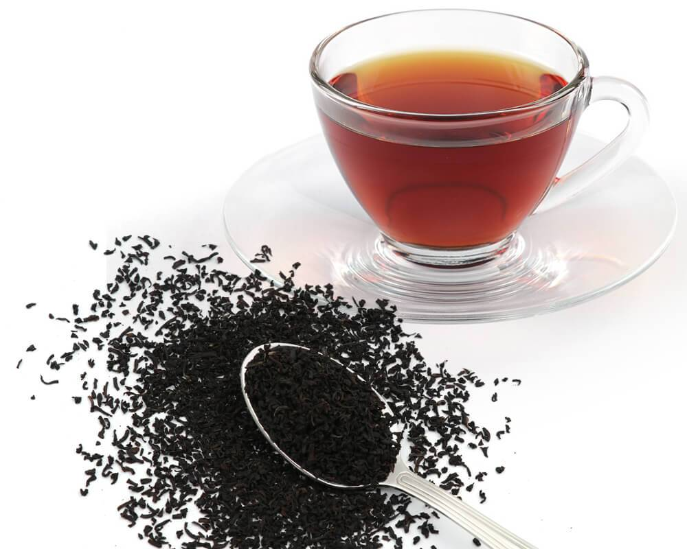
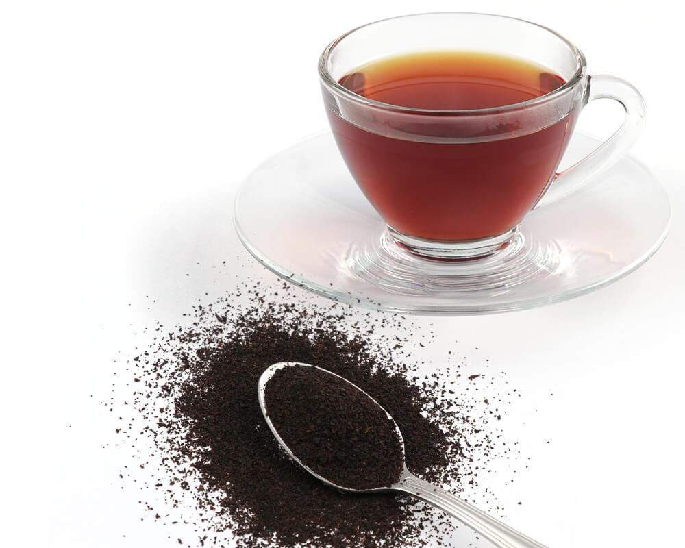
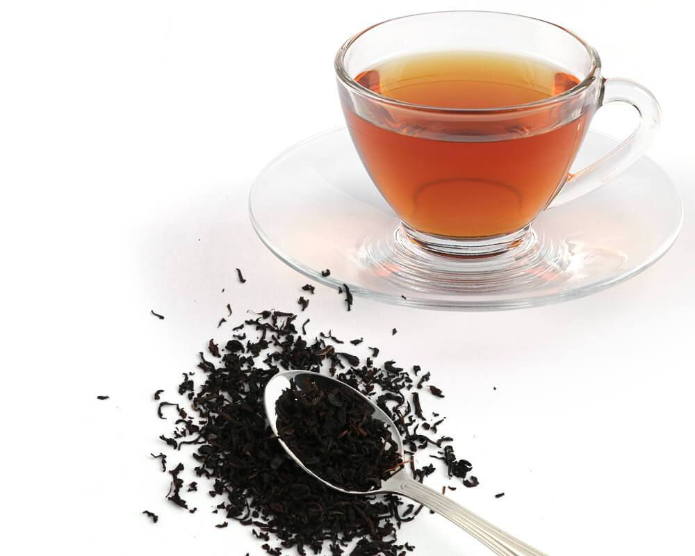
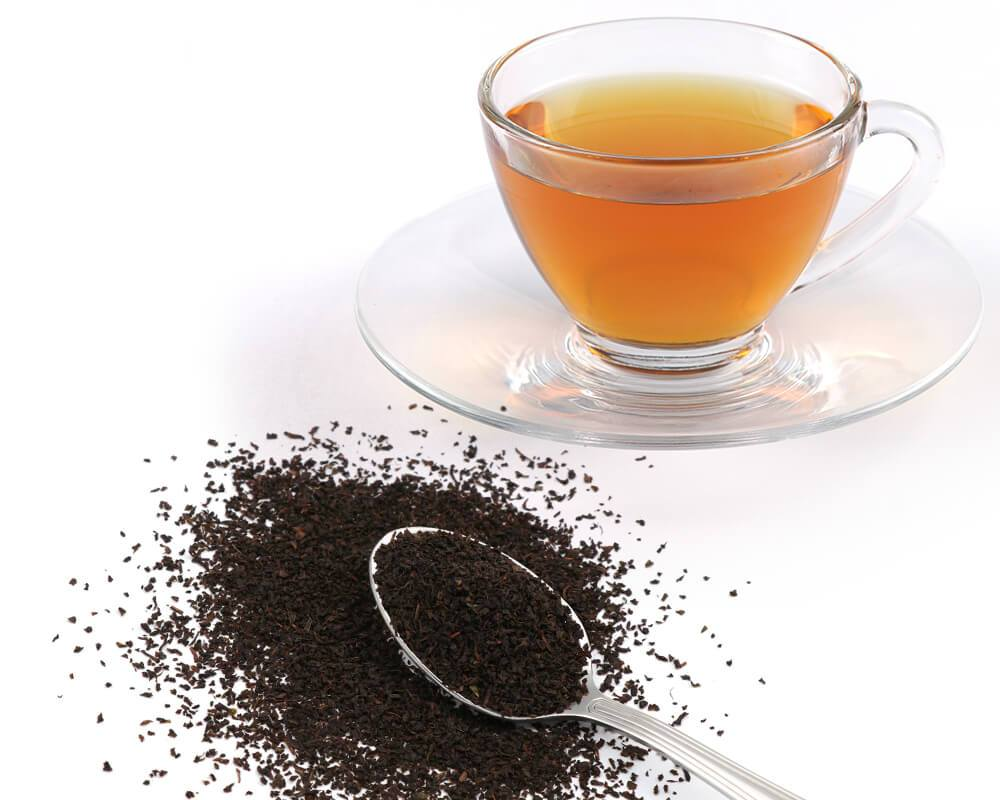
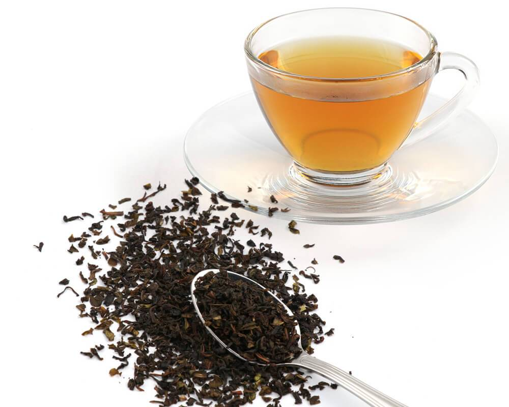
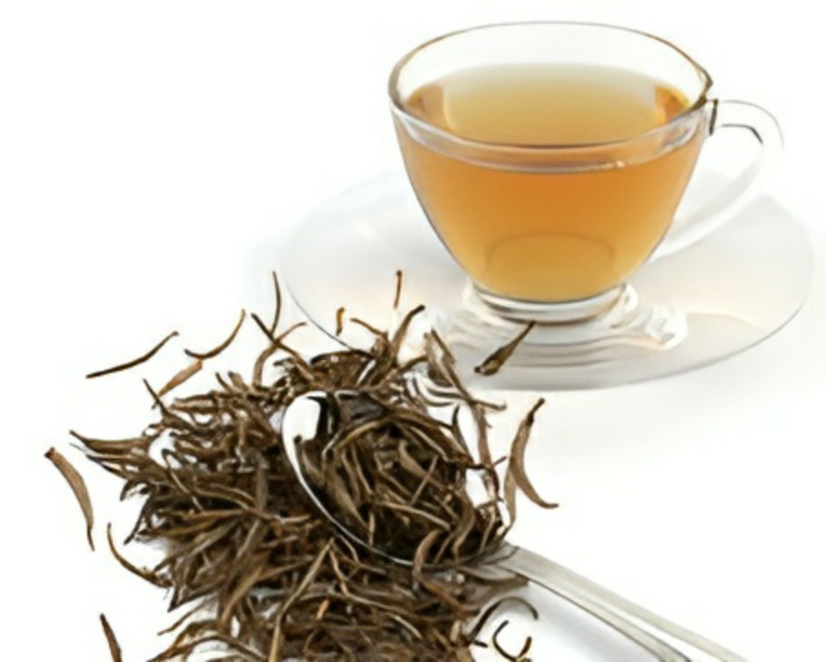
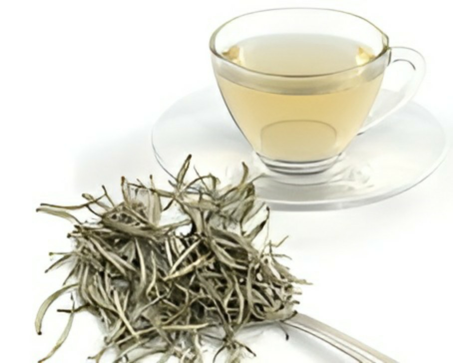
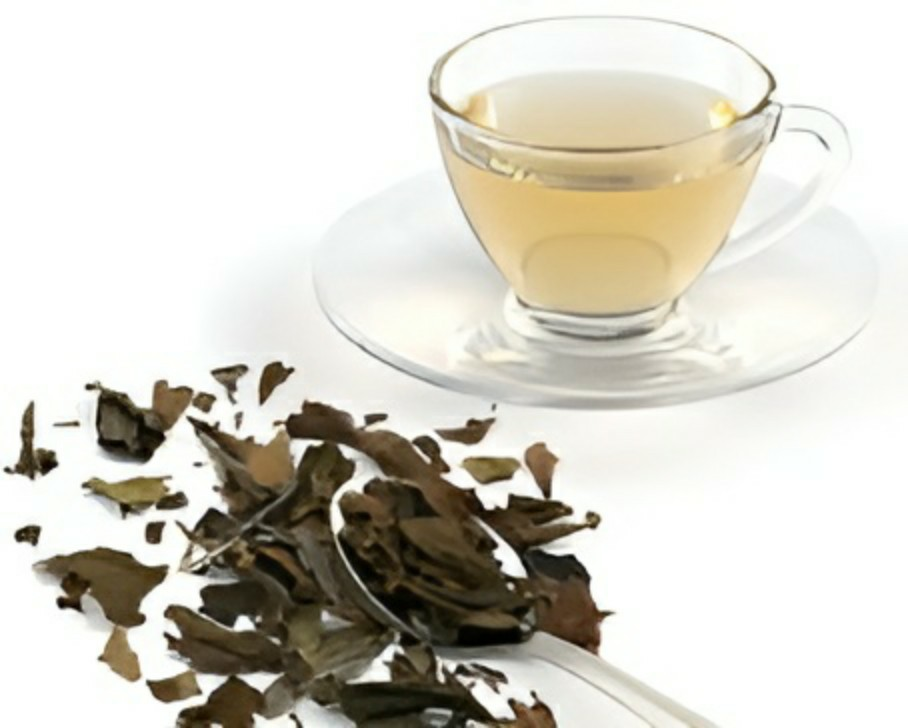
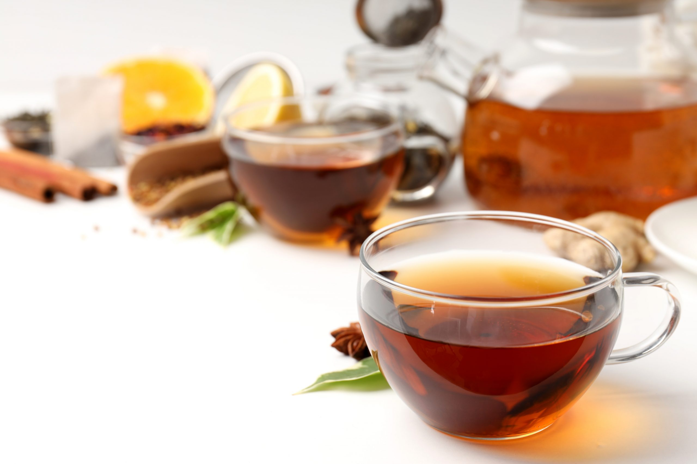

---------types and graders of ceylon symbolic flavours---------

Price strating from : $17.00 (250g)

Price strating from : $12.00 (250g)

Price strating from : $19.00 (250g)

Price strating from : $20.00 (250g)

Price strating from : $24.00 (250g)

Price strating from : $24.00 (250g)

Price strating from : $24.00 (250g)

Price strating from : $24.00 (250g)

Price strating from : $30.00 (50g)